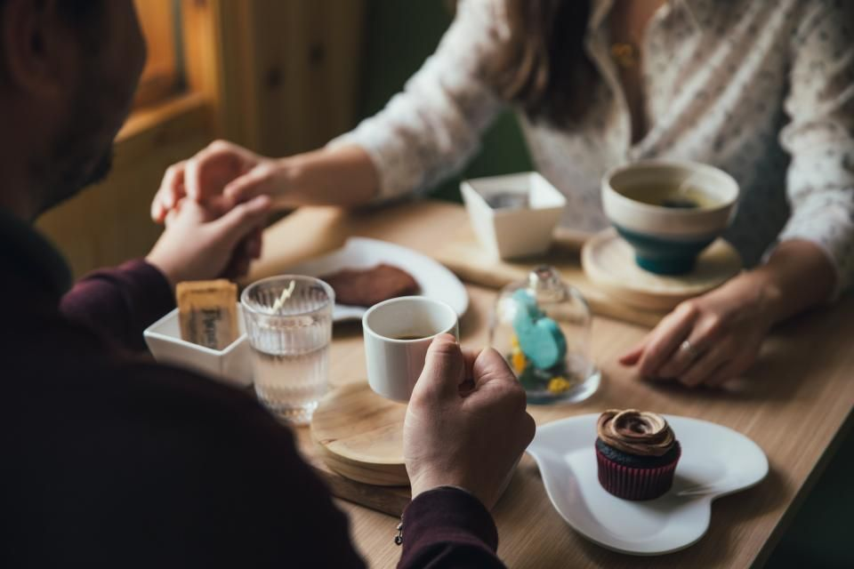
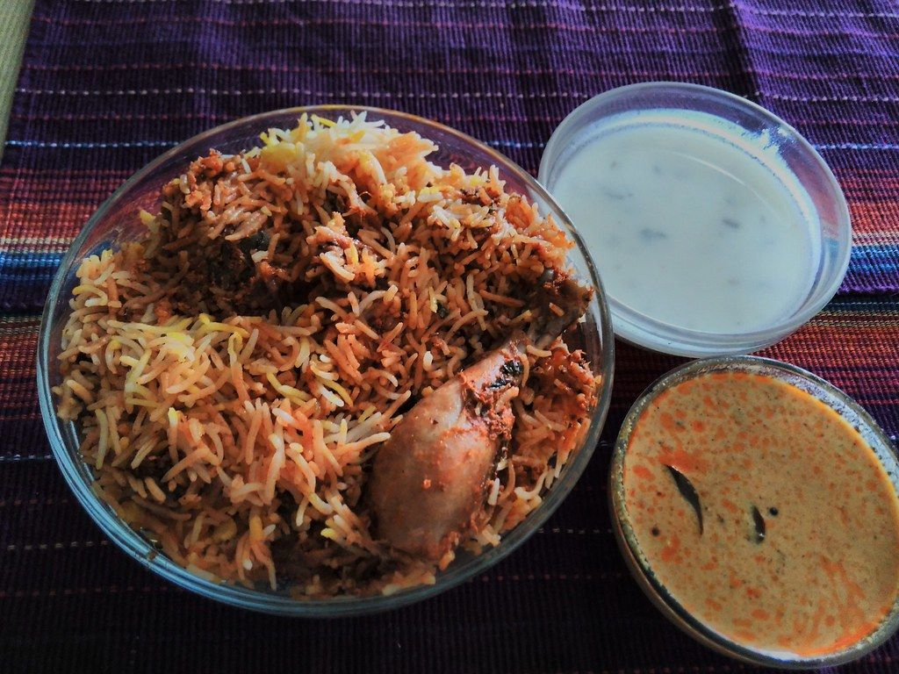

Fine dining
We provide a refined setting for you to enjoy a meal at your own pace.
Preview made for Coorg Restaurant by adris.tech - not their official website
A dining space in Indiranagar for those who enjoy traditional flavours and quiet meals.
We are a local restaurant located in the heart of Indiranagar. Our space is designed for people who appreciate a relaxed meal with family and friends. We focus on quality food and simple hospitality.
We provide a refined setting for you to enjoy a meal at your own pace.
We have enough space to host your family gatherings and small celebrations.
Sample photos - your own photos of Coorg Restaurant go here.


Indiranagar, Bengaluru.
Reach us on +91 98454 93688 or +91 90081 00544.
Listed on Justdial, Sulekha, Zomato.
Indiranagar, Bengaluru
Please call ahead to confirm
Tell us what you need and pick a time.
Indiranagar, Bengaluru
Call ahead for larger groups.
Indiranagar, Bengaluru.
Call +91 98454 93688 or WhatsApp.
Please call before you visit to confirm today's timings.
Fine dining, Group dining.
Call us to book your table in Indiranagar
adris.tech designed it as a free sample. The buttons are switched off while it is a preview. Like it? We can make it your official website - with your own photos, your timings and online booking.